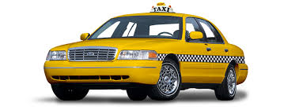

Сотни довольных клиентов
Такси – это удобный и быстрый способ передвижения по городу. Независимо от погоды, времени суток и местоположения, вы всегда можете вызвать такси и добраться до нужного места. Квалифицированные водители такси знают город как свои пять пальцев и всегда выбирают оптимальный маршрут для быстрой доставки пассажиров. Такси предлагает комфортабельные условия для пассажиров – обычно в салоне такси установлен кондиционер, аудиосистема и навигационное устройство. Благодаря этому даже во время пробок или плохой погоды вы можете почувствовать себя комфортно и безопасно.  Еще одним преимуществом такси является его доступность – оно доступно круглосуточно и в любой точке города. Вы всегда можете найти свободное такси, вызвав его по телефону, через мобильное приложение или просто подняв руку на улице.
Такси – надежный и проверенный способ передвижения, который подходит как для поездок по делам, так и для развлечений. Не стоит тратить время на поиск парковки или ожидание общественного транспорта – выбирайте такси и доверьте свое перемещение профессионалам.